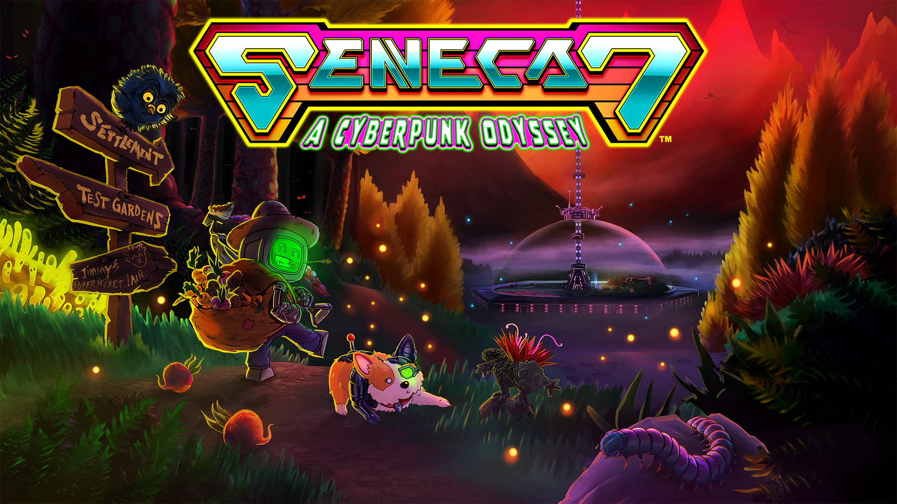

Seneca 7: A Cyberpunk Odyssey
"Seneca 7: A Cyberpunk Odyssey" © The Seneca Project 2022-2023
Build a new life in a cozy cyberpunk adventure RPG!
Polluted air having you gasping for breath?
Drowning in endless debt? Online dating getting you nowhere?
Leave your worries behind and reboot your life on Seneca 7, where dreams come true!* (Restrictions may apply. Results may vary.*)
Click to find out more!
"-ASM has a lot of great features built-in, including loading screens, pause screens, and profiles. Creating scene collections that have persistent objects with the ability to toggle the opening and closing of collections from a single Scene Helper asset made organizing and optimizing our project that much easier!"